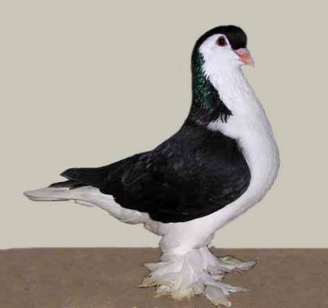

PIGEON 1

Rock Dove
The Rock Dove is the wild ancestor of domestic pigeons. Feral pigeons come in many shades and patterns.
PIGEON 2
Jacobin
The Jacobin is a fancy pigeon with a feathered hood around its head. It came from Asia.
PIGEON 3
Dönek
The Dönek is a Turkish pigeon breed known for turning and diving while flying.
PIGEON 4
Lahore
The Lahore is a large, calm pigeon breed known for its gentle nature and soft colors.